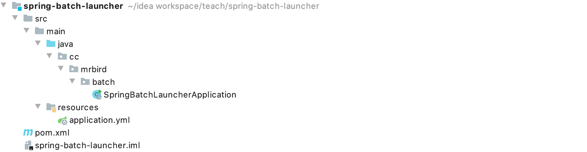
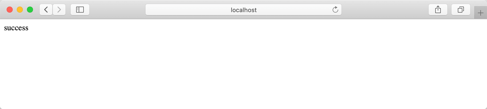
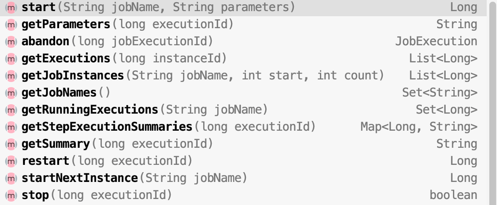

在前面的例子中，我们配置的任务都是在项目启动的时候自动运行，我们也可以通过JobLauncher或者JobOperator手动控制任务的运行时机，这节记录下它们的用法。
框架搭建
新建一个Spring Boot项目，版本为2.2.4.RELEASE，artifactId为spring-batch-launcher，项目结构如下图所示：

剩下的数据库层的准备，项目配置，依赖引入和Spring Batch入门文章中的框架搭建步骤一致，这里就不再赘述。
此外，本节我们需要演示在Controller里通过JobLauncher或者JobOperator调度任务，所以我们还需在pom里引入web依赖：
1 | <dependency> |
然后准备个任务，用于后续测试。在cc.mrbird.batch包下新建job包，然后在该包下新建MyJob：
1 |
|
在step()方法中，我们通过执行上下文获取了key为message的参数值。
JobLauncher
在cc.mrbird.batch包下新建controller包，然后在该包下新建JobController：
1 |
|
上面代码中，我们注入了JobLauncher和上面配置的Job，然后通过JobLauncher的run(Job job, JobParameters jobParameters)方法运行指定的任务Job，并且传递了参数。
要关闭Spring Batch启动项目自动运行任务的机制，需要在项目配置文件application.yml中添加如下配置：
1 | spring: |
启动项目，在浏览器地址栏访问：http://localhost:8080/job/launcher/hello：
项目控制台日志打印如下：
1 | 2020-03-12 10:24:31.547 INFO 41266 --- [nio-8080-exec-4] o.s.b.c.l.support.SimpleJobLauncher : Job: [SimpleJob: [name=job]] launched with the following parameters: [{message=hello}] |
此外，需要注意的是：同样的参数，同样的任务再次运行的时候将抛出JobInstanceAlreadyCompleteException异常，比如在浏览器中再次访问http://localhost:8080/job/launcher/hello，项目控制台日志打印如下：
1 | org.springframework.batch.core.repository.JobInstanceAlreadyCompleteException: A job instance already exists and is complete for parameters={message=hello}. If you want to run this job again, change the parameters. |
所以我们在任务调度的时候，应避免参数重复。
JobOperator
在JobController里添加一个新的端点：
1 |
|
上面代码中，我们注入了JobOperator，JobOperator的start(String jobName, String parameters)方法传入的是任务的名称（任务在Spring IOC容器中的名称）,并且参数使用key-value的方式传递。
要通过任务名称获取到相应的Bean，还需要添加一个额外的配置。在cc.mrbird.batch包下新建configure包，然后在该包下新建JobConfigure：
1 |
|
如果没有这段配置，在任务调度的时候将报org.springframework.batch.core.launch.NoSuchJobException: No job configuration with the name [job] was registered。
启动任务，浏览器访问：http://localhost:8080/job/operator/mrbird：

项目控制台日志打印如下：
1 | 2020-03-12 10:51:20.174 INFO 41405 --- [nio-8080-exec-2] o.s.b.c.l.support.SimpleJobOperator : Checking status of job with name=job |
JobOperator包含了许多实用的方法：

具体可以自己尝试玩一玩。
本节源码链接：https://github.com/wuyouzhuguli/SpringAll/tree/master/73.spring-batch-launcher。